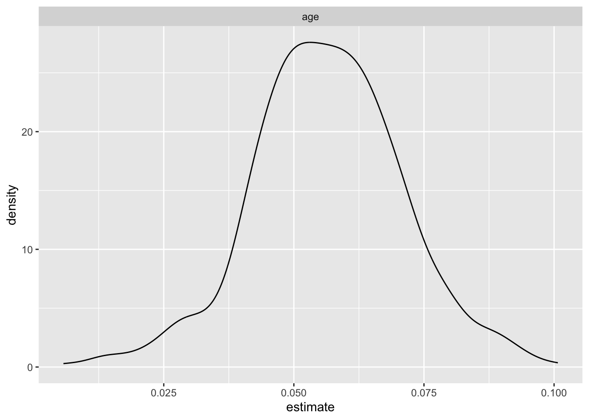
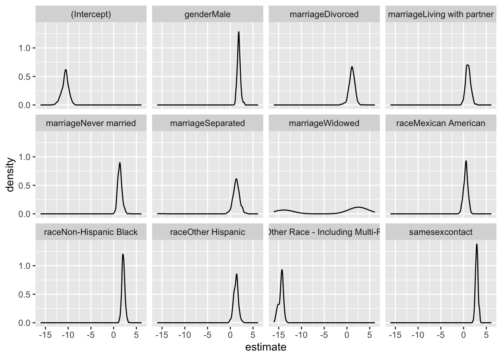

The National Health and Nutrition Examination Survey is a program of studies designed to assess the health and nutritional status of adults and children in the United States. The survey is unique in that it combines interviews and physical examinations. NHANES is a major program of the National Center for Health Statistics (NCHS). NCHS is part of the Centers for Disease Control and Prevention (CDC) and has the responsibility for producing vital and health statistics for the Nation.
The NHANES interview includes demographic, socioeconomic, dietary, and health-related questions. The examination component consists of medical, dental, and physiological measurements, as well as laboratory tests administered by highly trained medical personnel. In this study, we used the demographic data, HIV testing, and sexual behavior data from 1999 to 2016 to identify the potential sociodemographic factors associated with HIV infection status.
Our study’s primary objective is to analyze the NHANES dataset from 1999 to 2016 to identify sociodemographic factors associated with HIV infection rates in the United States. By examining variables such as age, gender, race, education level, and marial status, we aim to illuminate the complex interplay of societal elements influencing HIV prevalence. This analysis will provide valuable insights into the demographics most affected by HIV, guiding public health strategies and resource allocation to improve prevention and treatment programs. Through this research, we seek to contribute to a more nuanced understanding of HIV epidemiology that could underpin targeted interventions and support the reduction of infection disparities across diverse population groups.
Imported demographic, HIV test, and sexual behavior dataframes 1999 - 2016.
demo_list =
list.files(path = "NHANES/DEMO", full.names = TRUE)
hiv_list =
list.files(path = "NHANES/HIV", full.names = TRUE)
sxq_list =
list.files(path = "NHANES/SXQ", full.names = TRUE)
load_files = function(x){
filetype =
str_extract(x, "DEMO|HIV|SXQ")
year =
str_extract(x, "(?<=_)[A-Z]")
data =
read_xpt(x) |>
janitor::clean_names()|>
mutate(filetype = filetype, year = year)
}
demo_list_output =
map(demo_list, load_files)
hiv_list_output =
map(hiv_list, load_files)
sxq_list_output =
map(sxq_list, load_files)
join_pair = function(df1, df2) {
left_join(df1, df2, by = c("seqn", "year"))
}
hiv_demo_list =
map2(hiv_list_output, demo_list_output, ~join_pair(.x, .y))
hiv_demo_sxq_df =
map2(hiv_demo_list, sxq_list_output, ~join_pair(.x, .y)) |>
bind_rows() Re-coded variables of interest: Restricted particpants’s age between 20 and 49
cleaned_joined_df =
hiv_demo_sxq_df |>
filter(ridageyr >= 20 & ridageyr <= 49) |>
mutate(hiv = case_when(
lbdhi == 1 | lbxhivc == 1 ~ 1,
lbdhi == 2 | lbxhivc == 2 ~ 2)
)|>
mutate(MSM = case_when(
year %in% c("A","B","C") ~ sxq220,
year %in% c("D","E","F","G","H","I") ~ sxq550)
)|>
mutate(WSW = case_when(
year %in% c("A","B","C") ~ sxq150,
year %in% c("D","E","F","G","H","I") ~ sxq490)
)|>
mutate(year = recode(year,
"A" = "1999-2000",
"B" = "2001-2002",
"C" = "2003-2004",
"D" = "2005-2006",
"E" = "2007-2008",
"F" = "2009-2010",
"G" = "2011-2012",
"H" = "2013-2014",
"I" = "2015-2016"),
hiv = recode(hiv,
"1" = "Reactive",
"2" = "Non-reactive"),
gender = recode(riagendr,
"1" = "Male",
"2" = "Female"),
age = ridageyr,
race = recode(ridreth1,
"1" = "Mexican American",
"2" = "Other Hispanic",
"3" = "Non-Hispanic White",
"4" = "Non-Hispanic Black",
"5" = "Other Race - Including Multi-Racial"),
education = recode(dmdeduc2,
"1" = "Less than 9th grade",
"2" = "9-11th grade",
"3" = "High school graduate or equivalent",
"4" = "Some college or AA degree",
"5" = "College graduate or above",
"7" = NA_character_,
"9" = NA_character_),
marriage = recode(dmdmartl,
"1" = "Married",
"2" = "Widowed",
"3" = "Divorced",
"4" = "Separated",
"5" = "Never married",
"6" = "Living with partner",
"77" = NA_character_,
"99" = NA_character_)
) |>
mutate(samesexcontact = case_when(
(MSM %in% c(0, 7777, 77777,9999, 99999) | WSW %in% c(0, 7777, 77777, 9999, 99999)) ~ 0,
(MSM >= 1 & MSM <= 600) | (WSW >= 1 & WSW <= 600) ~ 1
)) |>
select(seqn, hiv, age, gender, race, education, marriage, year, samesexcontact)Visualization - 1 Total number as y-axis value Across race
cleaned_joined_df %>%
filter(hiv == "Reactive") %>%
group_by(race, gender) %>%
summarize(n = n(), age_mean = round(mean(age), 2)) %>%
ungroup() %>%
mutate(race = fct_reorder(race, n)) %>%
mutate(text_label = str_c("mean age: ", age_mean)) %>%
plot_ly(x = ~race, y = ~n, color = ~gender, type = "bar", text = ~text_label, colors = "viridis") %>%
layout(
xaxis = list(title = "Race"),
yaxis = list(title = "Total Number of HIV Positive Patients"),
title = "The Total Number of HIV Positive Patients from 1999 to 2016 Across Races"
)## `summarise()` has grouped output by
## 'race'. You can override using the
## `.groups` argument.Visualization - 1-1 Total percent as y-axis value
cleaned_joined_df %>%
drop_na(hiv) %>%
group_by(race, gender) %>%
summarize(total_par = n(), age_mean = round(mean(age), 2),
hiv_percent = round(sum(hiv == "Reactive") / sum(hiv != "Reactive", hiv == "Reactive") * 100, 3)) %>%
ungroup() %>%
mutate(race = fct_reorder(race, hiv_percent)) %>%
mutate(text_label = str_c("mean age: ", age_mean)) %>%
plot_ly(x = ~race, y = ~hiv_percent, color = ~gender, type = "bar", text = ~text_label, colors = "viridis") %>%
layout(
xaxis = list(title = "Race"),
yaxis = list(title = "Total Percent of HIV Positive Patients"),
title = "The Total Percent of HIV Positive Patients from 1999 to 2016 Across Races"
)## `summarise()` has grouped output by
## 'race'. You can override using the
## `.groups` argument.Visualization 2: by year
cleaned_joined_df %>%
drop_na(hiv) %>%
group_by(year, gender) %>%
summarize(age_mean = round(mean(age), 2),
hiv_percent = round(sum(hiv == "Reactive") / sum(hiv != "Reactive", hiv == "Reactive") * 100, 3)) %>%
ungroup() %>%
mutate(text_label = str_c("mean age: ", age_mean)) %>%
plot_ly(x = ~year, y = ~hiv_percent, color = ~gender, type = "scatter", mode = "lines+markers",
text = ~text_label, colors = "viridis") %>%
layout(
xaxis = list(title = "Year"),
yaxis = list(title = "Total Percent of HIV Positive Patients"),
title = "The Total Percent of HIV Positive Patients from 1999 to 2016"
)## `summarise()` has grouped output by
## 'year'. You can override using the
## `.groups` argument.Visualization 3: Across Education level
cleaned_joined_df %>%
drop_na(hiv) %>%
group_by(education, gender) %>%
summarize(total_par = n(), age_mean = round(mean(age), 2),
hiv_percent = round(sum(hiv == "Reactive") / total_par * 100, 3)) %>%
ungroup() %>%
mutate(education = forcats::fct_relevel(education, c("Less than 9th grade", "9-11th grade",
"High school graduate or equivalent",
"Some college or AA degree",
"College graduate or above"))) %>%
mutate(text_label = str_c("mean age: ", age_mean)) %>%
plot_ly(x = ~education, y = ~hiv_percent, color = ~gender, type = "bar", text = ~text_label, colors = "viridis") %>%
layout(
xaxis = list(title = "Education level"),
yaxis = list(title = "Total Percent of HIV Positive Patients"),
title = "The Total Percent of HIV Positive Patients from 1999 to 2016 Across Education Level"
)## `summarise()` has grouped output by
## 'education'. You can override using
## the `.groups` argument.## Warning: Ignoring 2 observationsVisualization 4: Across marital status
cleaned_joined_df %>%
drop_na(hiv) %>%
group_by(marriage, gender) %>%
summarize(total_par = n(), age_mean = round(mean(age), 2),
hiv_percent = round(sum(hiv == "Reactive") / sum(hiv != "Reactive", hiv == "Reactive") * 100, 3)) %>%
ungroup() %>%
mutate(marriage = fct_reorder(marriage, hiv_percent)) %>%
mutate(text_label = str_c("mean age: ", age_mean)) %>%
plot_ly(x = ~marriage, y = ~hiv_percent, color = ~gender, type = "bar", text = ~text_label, colors = "viridis") %>%
layout(
xaxis = list(title = "Marital Status"),
yaxis = list(title = "Total Percent of HIV Positive Patients"),
title = "The Total Percent of HIV Positive Patients from 1999 to 2016 Across Marital Status"
)## `summarise()` has grouped output by
## 'marriage'. You can override using
## the `.groups` argument.## Warning: Ignoring 2 observationsVisualization 5: Sexual behavior
cleaned_joined_df %>%
drop_na(hiv) %>%
mutate(samesexcontact = recode(samesexcontact, "0" = "No",
"1" = "Yes")) %>%
group_by(samesexcontact, gender) %>%
summarize(total_par = n(), age_mean = round(mean(age), 2), hiv_num = sum(hiv == "Reactive"),
hiv_percent = round(sum(hiv == "Reactive") / sum(hiv != "Reactive", hiv == "Reactive") * 100, 3)) %>%
ungroup() %>%
mutate(text_label = str_c("mean age: ", age_mean)) %>%
plot_ly(x = ~samesexcontact, y = ~hiv_percent, color = ~gender, type = "bar", text = ~text_label, colors = "viridis") %>%
layout(
xaxis = list(title = "Same Sex Sexual Behavior"),
yaxis = list(title = "Total Percent of HIV Positive Patients"),
title = "The Total Percent of HIV Positive Patients from 1999 to 2016 Across Sexual Behavior"
)## `summarise()` has grouped output by
## 'samesexcontact'. You can override
## using the `.groups` argument.## Warning: Ignoring 2 observationsVisualization 6: by year, stratified by education level instead of gender
cleaned_joined_df %>%
drop_na(hiv) %>%
group_by(year, education) %>%
summarize(age_mean = round(mean(age), 2),
hiv_percent = round(sum(hiv == "Reactive") / sum(hiv != "Reactive", hiv == "Reactive") * 100, 3)) %>%
ungroup() %>%
mutate(education = forcats::fct_relevel(education, c("Less than 9th grade", "9-11th grade",
"High school graduate or equivalent",
"Some college or AA degree",
"College graduate or above"))) %>%
mutate(text_label = str_c("mean age: ", age_mean)) %>%
plot_ly(x = ~year, y = ~hiv_percent, color = ~education, type = "scatter", mode = "lines+markers",
text = ~text_label, colors = "viridis") %>%
layout(
xaxis = list(title = "Year"),
yaxis = list(title = "Total Percent of HIV Positive Patients"),
title = "The Total Percent of HIV Positive Patients from 1999 to 2016 by Education Level"
)## `summarise()` has grouped output by
## 'year'. You can override using the
## `.groups` argument.Visualization 7: by year, stratified by race
cleaned_joined_df %>%
drop_na(hiv) %>%
group_by(year, race) %>%
summarize(age_mean = round(mean(age), 2),
hiv_percent = round(sum(hiv == "Reactive") / sum(hiv != "Reactive", hiv == "Reactive") * 100, 3)) %>%
ungroup() %>%
mutate(race = fct_reorder(race, hiv_percent)) %>%
mutate(text_label = str_c("mean age: ", age_mean)) %>%
plot_ly(x = ~year, y = ~hiv_percent, color = ~race, type = "scatter", mode = "lines+markers",
text = ~text_label, colors = "viridis") %>%
layout(
xaxis = list(title = "Year"),
yaxis = list(title = "Total Percent of HIV Positive Patients"),
title = "The Total Percent of HIV Positive Patients from 1999 to 2016 by Race"
)## `summarise()` has grouped output by
## 'year'. You can override using the
## `.groups` argument.Visualization 8: by year, stratified by marital status
cleaned_joined_df %>%
drop_na(hiv, marriage) %>%
group_by(year, marriage) %>%
summarize(age_mean = round(mean(age), 2),
hiv_percent = round(sum(hiv == "Reactive") / sum(hiv != "Reactive", hiv == "Reactive") * 100, 3)) %>%
ungroup() %>%
mutate(text_label = str_c("mean age: ", age_mean)) %>%
plot_ly(x = ~year, y = ~hiv_percent, color = ~marriage, type = "scatter", mode = "lines+markers",
text = ~text_label, colors = "viridis") %>%
layout(
xaxis = list(title = "Year"),
yaxis = list(title = "Total Percent of HIV Positive Patients"),
title = "The Total Percent of HIV Positive Patients from 1999 to 2016 by Marital Status"
)## `summarise()` has grouped output by
## 'year'. You can override using the
## `.groups` argument.Visualization 9: by year, stratified by Sexual behavior
cleaned_joined_df %>%
drop_na(hiv, samesexcontact) %>%
mutate(samesexcontact = recode(samesexcontact, "0" = "No",
"1" = "Yes")) %>%
group_by(year, samesexcontact) %>%
summarize(age_mean = round(mean(age), 2),
hiv_percent = round(sum(hiv == "Reactive") / sum(hiv != "Reactive", hiv == "Reactive") * 100, 3)) %>%
ungroup() %>%
mutate(text_label = str_c("mean age: ", age_mean)) %>%
plot_ly(x = ~year, y = ~hiv_percent, color = ~samesexcontact, type = "scatter", mode = "lines+markers",
text = ~text_label, colors = "viridis") %>%
layout(
xaxis = list(title = "Year"),
yaxis = list(title = "Total Percent of HIV Positive Patients"),
title = "The Total Percent of HIV Positive Patients from 1999 to 2016 by Sexual Behavior"
)## `summarise()` has grouped output by
## 'year'. You can override using the
## `.groups` argument.cleaned_regression_df=
cleaned_joined_df |>
mutate(
hiv_outcome = ifelse(hiv == "Reactive", 1, ifelse(hiv == "Non-reactive", 0, NA)),
education = forcats::fct_relevel(education, c("Less than 9th grade", "9-11th grade", "High school graduate or equivalent", "Some college or AA degree", "College graduate or above")),
race = forcats::fct_relevel(race, c("Non-Hispanic White", "Mexican American", "Non-Hispanic Black", "Other Hispanic", "Other Race - Including Multi-Racial")),
marriage = forcats::fct_relevel(marriage, c("Married", "Widowed", "Divorced", "Separated", "Never married", "Living with partner"))
)variables = c("age","gender","education","race","samesexcontact","marriage")
fit_and_summarize <- function(var) {
model = glm(as.formula(paste("hiv_outcome~", var)), data = cleaned_regression_df, family = binomial()) |>
broom::tidy()
}
model_summaries =
map(variables, fit_and_summarize) |>
bind_rows() |>
filter(p.value <= 0.008 & term != "(Intercept)")
model_summaries |>
select(term, estimate, p.value) |>
knitr::kable(digits = 3)| term | estimate | p.value |
|---|---|---|
| age | 0.037 | 0.001 |
| genderMale | 1.107 | 0.000 |
| raceNon-Hispanic Black | 2.302 | 0.000 |
| samesexcontact | 2.854 | 0.000 |
| marriageNever married | 1.407 | 0.000 |
| marriageLiving with partner | 1.004 | 0.001 |
Because I am conducting 6 logistic tests, the Bonferroni-corrected
significance level would be 0.05/6 = 0.008. Variables age,
gender, race, samesexcontact,
marriage were found significant associated with HIV
infection status, at 0.8% level of significance. Therefore, these
variables were included to the final model.
fit_regression = cleaned_regression_df |>
glm(hiv_outcome ~ samesexcontact + gender + age + race + marriage, data = _, family = binomial())
fit_regression|>
broom::tidy() |>
mutate(OR = exp(estimate)) |>
select(term, estimate, OR, p.value)|>
knitr::kable(digits = 3)| term | estimate | OR | p.value |
|---|---|---|---|
| (Intercept) | -10.460 | 0.000 | 0.000 |
| samesexcontact | 2.834 | 17.020 | 0.000 |
| genderMale | 1.820 | 6.171 | 0.000 |
| age | 0.056 | 1.058 | 0.000 |
| raceMexican American | 0.455 | 1.576 | 0.324 |
| raceNon-Hispanic Black | 2.072 | 7.941 | 0.000 |
| raceOther Hispanic | 1.245 | 3.473 | 0.009 |
| raceOther Race - Including Multi-Racial | -14.286 | 0.000 | 0.978 |
| marriageWidowed | 2.036 | 7.661 | 0.066 |
| marriageDivorced | 1.138 | 3.121 | 0.036 |
| marriageSeparated | 1.406 | 4.080 | 0.020 |
| marriageNever married | 1.341 | 3.823 | 0.002 |
| marriageLiving with partner | 1.033 | 2.811 | 0.040 |
Logistic regression results:
bootstrap_df =
cleaned_regression_df |>
bootstrap(n = 500) |>
mutate(
models = map(.x = strap, ~glm(hiv_outcome ~ samesexcontact + gender + age + race + marriage, data = .x, family = binomial()) ),
results = map(models, broom::tidy)) |>
select(-strap, -models) |>
unnest(results) |>
group_by(term) |>
mutate(OR = exp(estimate))bootstrap_df|>
filter(term == "age") |>
ggplot(aes(x = estimate))+
geom_density() +
facet_wrap(.~ term) 
bootstrap_df|>
filter(term != "age") |>
ggplot(aes(x = estimate))+
geom_density() +
facet_wrap(.~ term)
bootstrap_df|>
summarize(
mean_OR = mean(OR),
CI_lower = quantile(OR, 0.025),
CI_upper = quantile(OR, 0.975)
)|>
knitr::kable(digits = 3)| term | mean_OR | CI_lower | CI_upper |
|---|---|---|---|
| (Intercept) | 0.000 | 0.000 | 0.000 |
| age | 1.058 | 1.028 | 1.090 |
| genderMale | 6.864 | 3.494 | 13.229 |
| marriageDivorced | 3.877 | 0.979 | 9.787 |
| marriageLiving with partner | 3.382 | 0.928 | 8.188 |
| marriageNever married | 4.600 | 1.638 | 11.053 |
| marriageSeparated | 4.945 | 0.835 | 12.778 |
| marriageWidowed | 11.232 | 0.000 | 44.706 |
| raceMexican American | 1.691 | 0.504 | 3.844 |
| raceNon-Hispanic Black | 8.593 | 4.586 | 15.826 |
| raceOther Hispanic | 3.718 | 1.214 | 8.720 |
| raceOther Race - Including Multi-Racial | 0.000 | 0.000 | 0.000 |
| samesexcontact | 18.509 | 10.062 | 31.310 |
Bootstrap Confidence Intervals:
The logistic regression and bootstrap analyses indicate that several demographic factors are associated with HIV outcomes, same-sex behavior showing a particularly strong positive association. However, the wide 95% confidence intervals for most variables, excluding age, show significant uncertainty in the estimated odds ratios, highlighting the limitations of the study. These broad intervals may stem from sample variability or unaccounted confounders, necessitating caution in drawing definitive conclusions.
Therefore, future research should explore larger and more diverse datasets to enhance the generalizability of findings and address potential sources of variability. Additionally, a thorough investigation into the complex interplay between demographic variables and HIV risk, considering potential interactions and subgroup analyses, could provide a more nuanced understanding of these associations. Moreover, the study could benefit from incorporating behavioral and contextual factors that might contribute to HIV risk.